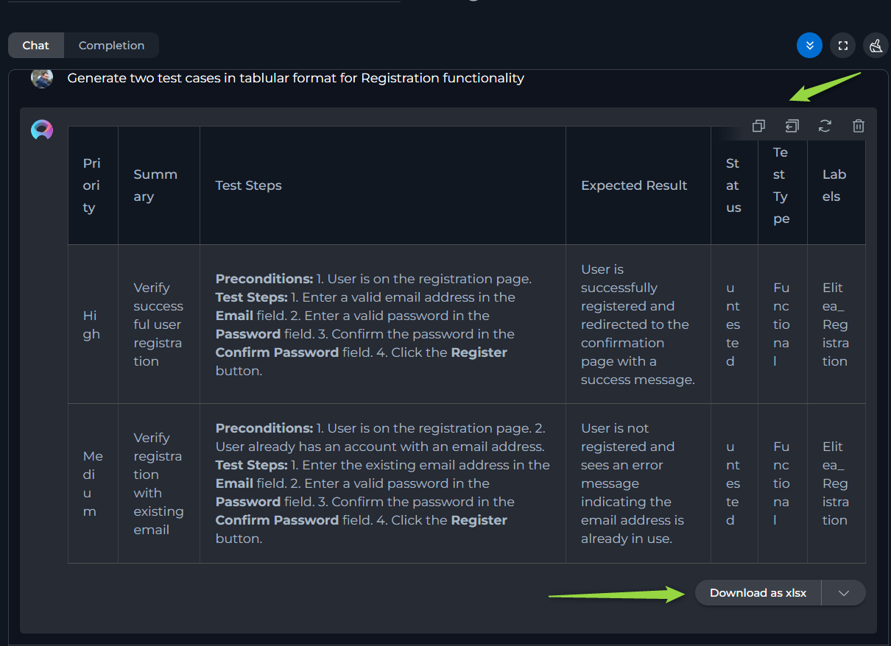
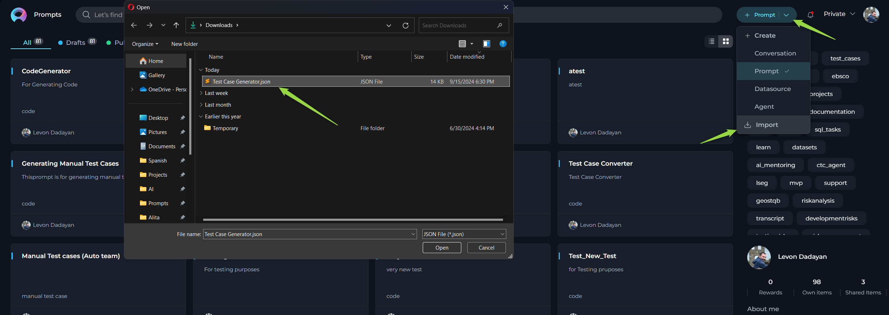
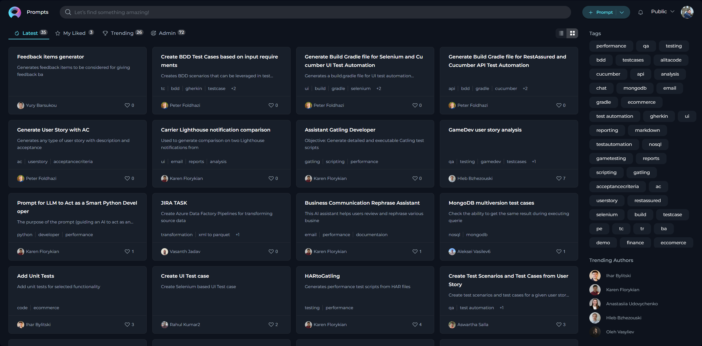
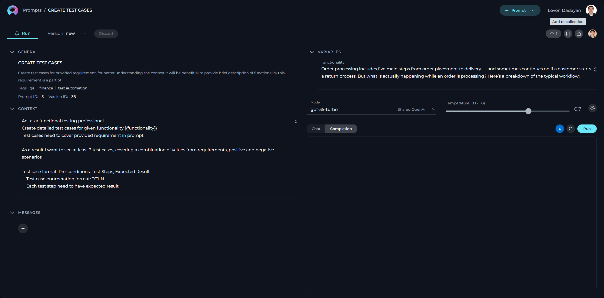

Prompts
Private project - Prompts menu
The Prompts menu within Private project serves as a dedicated inventory for all your prompts, irrespective of their current status. Consider it your personal repository for saving and organizing the prompts you've crafted.

How to Create a New Prompt
In the context of AI and machine learning, a prompt is an instruction, question, or statement that is given to an AI model to elicit a response or output. It serves as the initial input for systems like conversational agents or generative models.
- Click the + Prompt button on the top right.
- Fill in the Name, Description, and Context fields.
- Click Save.
Note: Name and Description are non-editable fields and can't be modified after saving the prompt.

Tags
In ELITEA, Tags serve as an efficient organizational tool that allows you to categorize and manage your collection of prompts, datasources and agents. By assigning relevant tags to each prompt, you create an intuitive labeling system that facilitates quick access and retrieval. Later on, you can filter prompts by these tags, simplifying the process of finding the precise prompt you need among a vast collection, which is especially useful for users with an extensive library of different prompt types and topics.
To add a tag to the prompt:
- Type a tag name or select from pre-existing tags from Tags input box.
- Press comma or Enter to create/select tag.
- Click Save to save the prompt with selected tags.
Note: User has the flexibility to assign one or more tags to each prompt, enabling a multi-dimensional labeling system.

CONTEXT
The Context field in ELITEA is a crucial component where users input the necessary background information or instructions that guide the LLM in generating accurate and relevant responses. This section serves as the foundational knowledge base for the model to understand and process your specific requests.
How to Input Context:
- Identify Key Information: Before entering data into the Context field, identify the essential details or instructions that the model needs to know to fulfill your request effectively. This could include the topic, specific terms, relevant background information, or the scope of the task.
- Enter the Details: In the Context field, clearly and concisely input the identified information. Ensure that the information is directly relevant to the task to maintain the model's focus and efficiency.
- Using Variables: For dynamic content generation, you can incorporate variables directly into the Context. Variables are denoted by double curly braces, e.g., {{variable_name}}. After defining a variable in the Context, you must specify its value in the Variables section to let the model replace the placeholder with the actual data during processing.
Note: For more information how to create better instructions for prompts please check Prompting Frameworks document.
Editability and Version Control
You can edit the Context field at any time to update or refine the instructions:
- Editing Existing Context: Simply make changes directly in the Context field and save them. This updates the prompt to reflect the latest information.
- Creating New Versions: If you want to keep the original version, you can save your changes as a new version. This is useful for comparing different versions or keeping a history of changes. Note: For more information check the Managing Prompt Versions: Save, Create Versions, and Manage.
These features allow you to adapt and improve the instructions as needed, ensuring the responses remain relevant and accurate.
WELCOME MESSAGE
The Welcome Message feature allows you to provide additional context for prompts, datasources, and agents. Currently, the Welcome Message is sent to LLM along with other instructions.
How to Add the Welcome Message:
- Add the Welcome Message: Type the welcome message text in the input field.
- Save the Configuration: After entering the desired text, ensure to save the changes to the prompt. This action makes the configured welcome message available to user in the Chat section.
Using the Welcome Message:
Go to the Chat section of the prompt. Here, you will see the configured Welcome Message. It will provide additional notification, instruction to the user.
Examples of Welcome Message:
- "Use this prompt for generating test cases"
- "Don't forget to review the generated test cases before usage"

CONVERSATION STARTERS
The Conversation Starter feature enables you to configure and add predefined text that can be used to initiate a conversation when executing an agent. This feature is particularly useful for setting a consistent starting point for interactions facilitated by the prompt.
How to Add a Conversation Starter:
- Access the Configuration Panel: Navigate to the Conversation Starter section.
- Add a Conversation Starter: Click the
+icon to open the text input field where you can type the text you wish to use as a conversation starter. - Save the Configuration: After entering the desired text, ensure to save the changes to the prompt. This action makes the configured conversation starter available for use.
Using a Conversation Starter:
Initiate a Conversation: Go to the Chat section of the prompt. Here, you will find the saved conversation starters listed. Click on the desired starter to automatically populate the chat input and execute the prompt.
Examples of Conversation Starters:
- "Generate test cases for provided Acceptance Criteria."
- "Generate automatic test cases for selected [Test_Case_ID]."

By setting up conversation starters, you streamline the process of initiating specific tasks or queries, making your interactions with the prompt more efficient and standardized.
MESSAGES
The MESSAGES section is a crucial component that allows users to structure the flow of interaction within a prompt.
- System Message: Sets the interaction's context and guidelines for the Gen AI, not visible to the user but crucial for defining the Gen AI's behavior.
- Assistant Message: The Gen AI's responses to user inputs, crafted within the context and constraints set by the system message.
- User Message: Inputs from the user, serving as prompts for the Gen AI to generate responses, thereby driving the conversation forward.
In conversational models, these message types work together within prompts to create a structured and meaningful dialogue. The system message defines the framework, the user message initiates and guides the flow of the conversation, and the assistant message provides the content of the interaction, all contributing to a coherent and purposeful exchange.
The System Message is a part of the prompt that provides instructions or context directly from the system's perspective. It sets the stage for the interaction, establishing rules, scenarios, or the setting for the Geb AI model to operate within. This is not generated in response to the user but is predefined by the designer of the prompt to guide the interaction.
**Example:**
**System Message**: "You are an AI trained to assist in creating detailed and accurate test cases. Focus on clarity and precision, and ensure all responses adhere to software testing standards."
This message informs the AI of its role in assisting with test case creation, setting expectations for the type of responses it should generate.
The Assistant Message is the AI's response generated based on the user's input and the context provided by the system message. This message aims to fulfill the user's request for information, assistance, or interaction within the guidelines set by the system message.
**Example:**
**User Message**: "Generate a test case for a login feature with email and password fields."
**Assistant Message**: "Test Case: Login Feature
**Objective**: Verify that the user can log in using a valid email and password.
**Steps**:
1. Navigate to the login page.
2. Enter a valid email in the email field.
3. Enter the corresponding password in the password field.
4. Click the login button.
**Expected Result**: The user is redirected to the homepage after successful login.
**Test Data**: Use registered email: user@example.com and password: SecurePass123."
The assistant's message provides a structured test case based on the user's request, adhering to the guidelines set by the system message.
The User Message is the input or query from the individual interacting with the Gen AI model. These messages are the user's side of the conversation, prompting the Gen AI to generate responses based on the context of the interaction as defined by the system message and the capabilities of the Gen AI.
**Example:**
**User Message**: "Can you add a test for password validation error handling?"
This message prompts the assistant to expand on the existing test cases by adding specific scenarios related to error handling.
To enhance the interactivity of a prompt, user can add multiple messages of any type by clicking the + icon, selecting the desired message type, and providing the relevant content.
Additionally, user have the ability to delete, copy, and reorder messages to best fit the flow of the conversation, easily arranging them by dragging and dropping the message boxes as needed for optimal organization and presentation.

VARIABLES
The variables within prompts add a layer of dynamic customization, allowing you to tailor prompts to specific needs or contexts.
Variables are denoted by double curly brackets (e.g., {{variable_name}}) and should be defined in the prompt's Context input box. Once a variable is entered into the CONTEXT, it automatically populates the VARIABLES section, where you can assign a value to that variable. This feature empowers users to create flexible and reusable prompts that can be easily adapted by changing the values of the variables as needed, without altering the entire prompt structure.
Note: User has the flexibility to define one or more variables in each prompt. Variables can also be defined in Messages.

How to Execute Prompt
To execute the prompt and get the output you have 2 options:
- Chat - is a specific type of input designed for conversational AI models, which aims to initiate or guide a dialogue. This can be in the form of a question, statement, or command that simulates human-like interaction, prompting the AI to produce a conversational response for engagement.
- Completion - is supplied to generative AI models, such as text or code generators, with the intent of the model continuing or completing the given input. The AI uses the context provided in the prompt to produce a coherent and contextually relevant extension or completion of the text.
Executing a Prompt Using the Chat Option:
- Configure the Prompt: Initialize by providing the necessary context, identifying the prompt with a name, and defining variable values (if applicable).
- Select the AI Model: Choose the appropriate AI model (e.g., gpt-4-0125-preview, gpt-35-turbo, etc.).
- Set the Temperature Parameter: Adjust this parameter to control the level of creativity or unpredictability in responses.
- Advanced Parameters (Optional): For finer control over response generation, you may adjust these optional settings:
- Top P (0-1) - determines the cumulative probability threshold for selecting words, balancing between creativity (higher values) and consistency (lower values).
- Top K - limits the choice of words to the K most probable, affecting the response's diversity and predictability.
- Maximum length - sets the cap on the response length, helping tailor responses to be as concise or detailed as desired.
- Initiate Interaction: Once all instructions for the prompt are set in the Context and/or Messages sections, you can start the execution by typing your text (be it a question or a command) into the chat box. Use simple commands like "Go", "Start Generating", "Execute", or "Run it" and click the Send icon to begin. These commands signal the Gen AI to process the information and generate the desired output based on the configured settings.

Additional Interaction Features:
- Auto scroll to bottom: This option can be toggled on or off to automatically scroll to the bottom of the output as it is being generated. This feature is helpful during long outputs to keep the most recent content visible.
- Full Screen Mode: Increase the size of the output window for better visibility and focus. This mode can be activated to expand the output interface to the full screen.
Post-Output Actions:
- Continue the Dialogue: To keep the conversation going, simply type your next question or command in the chat box and click the Send icon.
- Copy the Output: Click the Copy to clipboard icon to copy the generated text for use elsewhere.
- Append to Assistant Message: Use the Copy to Messages icon to add the output directly to the Assistant Message section for reference or further use.
- Regenerate Response: If the output isn't satisfactory, click the Regenerate icon to prompt the Gen AI to produce a new response.
- Delete Output: To remove the current output from the chat, click the Delete icon.
- Purge Chat History: For a fresh start or to clear sensitive data, click the Clean icon to erase the chat history.
- Specialized Download Options for Tabular outputs. When the Gen AI generates output in a tabular format, additional options become available to manage and utilize this structured data:
- Download as xlsx: Allows you to save the tabular output directly in an Excel spreadsheet format, facilitating easy data manipulation and analysis.
- Copy as markdown: Enables copying the tabular output in markdown format, suitable for use in markdown-supported environments like GitHub or blogging platforms.
- Copy as html: Permits copying the tabular output in HTML format, ideal for integration into web pages or emails, preserving the formatting and structure.

Executing a Prompt Using the Completion Option:
- Configure the Prompt: Start by providing the necessary context, naming the prompt, and setting variable values (if needed).
- Select the AI Model: Choose from the available AI models (e.g., gpt-4-0125-preview, gpt-35-turbo, etc.).
- Set the Temperature Parameter: Adjust this to modulate the AI's creative or unpredictable outputs.
- Advanced Parameters (Optional): For finer control over response generation, you may adjust these optional settings:
- Top P (0-1) - determines the cumulative probability threshold for selecting words, balancing between creativity (higher values) and consistency (lower values).
- Top K - limits the choice of words to the K most probable, affecting the response's diversity and predictability.
- Maximum length - sets the cap on the response length, helping tailor responses to be as concise or detailed as desired.
- Choose the Completion option.
- Initiate Execution: Click the Run button.

Managing Prompt Versions: Save, Create Versions, and Manage
To optimally manage your prompts, understanding how to save and create versions is crucial. Follow these guidelines to efficiently save your prompt, create versions, and manage them.
How to Save a Prompt:
- To save your work on a prompt for the first time, simply click the Save button. This action creates what's known as the "latest" version of your prompt.
- You can continue to modify your prompt and save the changes to the "latest" version at any time by clicking the Save button again. If you wish to discard any changes made, you have the option to click the Discard button before saving.
Remember: The "latest" version represents the initial version you create. You can keep updating this version with your changes by saving them, without the need to create additional versions for your prompt.
How to Create New Versions:
For instances where you need to create and manage different iterations of your prompt:
- Initiate a New Version: Start by clicking the Save As Version button.
- Name Your Version: When saving your work, provide a version name that clearly identifies the iteration or changes made. Click Save to confirm your entry.
Best Practices for Version Naming:
- Length: Keep the version name concise, not exceeding 48 characters. This ensures readability and compatibility across various systems.
- Characters: Avoid using special characters such as spaces (" "), underscores ("_"), and others that might cause parsing or recognition issues in certain environments.
- Clarity: Choose names that clearly and succinctly describe the version's purpose or the changes it introduces, facilitating easier tracking and management of different versions.

Upon creating a new version of the prompt, several options become available to you:
- Publish: Make this particular version of the prompt available for use.
- Delete: Remove this version of the prompt if it’s no longer needed.
- Execute: Run this specific version of the prompt to see how it performs.
- Navigate Versions: Use the Version dropdown list to switch between and select different versions of the prompt. This allows for easy comparison and management of various iterations.

By following these steps, you can effectively manage the lifecycle and iterations of your prompts, ensuring that each version is appropriately saved, published, and utilized as per your requirements.
How to Publish a Prompt
To make your prompt available to the wider Epam Network and Communities, follow these steps for publication:
- Publishing Initiation: With your prompt crafted and saved, initiate the process by clicking the Publish button.
- Version Naming: Assign an informative version name (e.g., Gen-1.0) in the pop-up window. This name should encapsulate the essence or objective of the prompt, facilitating version management and future iterations.
- Review Submission: Finalize your submission by clicking Publish, forwarding your prompt for the moderation review process. This stage is vital to guarantee the prompts shared within the Epam community meet a standard of quality and relevance.

For publishing a specific version, firstly select the desired version and opt to publish. The chosen version's name appears in the "Publish version" pop-up window. It can be published as is or renamed before the final publication step.
Note: After publishing, the prompt can be retracted by selecting the Unpublish button.
Moderator Review Process
Submission to publication triggers a meticulous assessment by the moderators, tasked with ensuring prompt standards for quality, efficiency, and security are upheld.
Evaluative Steps Undertaken by Moderators:
- Initial Assessment: An initial examination confirms the prompt's completeness and adherence to the submission guidelines.
- Content Review: Evaluates the prompt’s relevance, clarity, compatibility with best practices, and information security.
- Practical Evaluation: Assesses the prompt's operational feasibility, including variables, system commands, and projected outcomes.
- Compliance Check: Final verification against community norms and security protocols, ensuring the protection of sensitive data.
Possible Outcomes of the Review
After the review process, a prompt can be categorized into one of the following statuses:
- Approved: If the prompt meets all specified criteria, it is accepted and added to the Public project under the Prompts section, making it accessible to the community.
- Rejected: If the prompt does not meet the necessary standards, it is not approved for publication. Constructive feedback is provided to the creator, enabling them to make the required adjustments and submit a revised version for future consideration.
Tracking the Status of Prompts
Prompts undergo several statuses through the review phase:
- All: An overview of all submissions regardless of their review stage.
- Draft: Saved yet unsubmitted prompts.
- Published: Moderation-approved prompts, now accessible in the Public project.
- On Moderation: Prompts currently under review.
- Approval: This status indicates that the prompt is awaiting the author's approval before a new version can be published. Note: This feature is currently under development and is not available at the moment.
- Rejected: Prompts evaluated and declined for publication.
How to Add Prompt into Collection
To add prompts to your collection, follow these steps:
- Once you've created a collection, you can start adding relevant prompts. Navigate to the prompt you wish to add and select an option to Add to Collection.
- Select the Collection you wish to add your prompt to from the pop-up window. You can add multiple prompts to a collection as long as they share the thematic relevance or purpose you've defined for your collection.

How to Export a Prompt
Exporting prompts allows you to utilize them across different platforms by choosing between two specific formats:
[Alita format]- this JSON format is optimized for the ELITEA platform, incorporating ELITEA-centric details such as prompt versioning, variables with their possible values, tags, and model configurations.[DIAL format]- also in JSON format, it's tailored for integration with the Epam AI Dial platform, including only information and structuring relevant to DIAL.
Exporting Your Prompt:
- Initiate the process by clicking the Export prompt icon.
- Choose your preferred format (Alita or DIAL) for export.
- The export process will generate a file, which will then be automatically downloaded to your device.

This functionalitsy facilitates the transfer and application of your prompts across different platforms by generating easily importable JSON files.
How to Import a Prompt
To use the prompts created in other platforms, follow these simple steps.
- Initiate Import: Select the Import option within ELITEA.
- Choose File: Browse and select the exported JSON prompt file.
- Complete Process: The prompt will be added under the Prompts section in ELITEA.
- Use Prompt: You can now access and utilize the imported prompt.

Note: ELITEA supports Jinja template. Make sure the content and variables in your prompt adhere to this format, especially avoiding spaces in variable names. For more information please check ELITEA and Epam AI Dial document.
Public project - Prompts menu
The Prompts menu within Public project showcases a collection of published and shared prompts within the community.
Layout of the Prompts Menu
The Prompts menu is organized into three distinct pages, each designed to offer a unique perspective on the available prompts:
- Latest: Displays all recently published prompts, providing a fresh look at the newest contributions to the community.
- My Likes: Highlights the prompts that you have liked. This personalized page allows you to revisit favorites effortlessly.
- Trending: Showcases the prompts with the highest number of likes, serving as a valuable resource for discovering top-rated prompts that hold significant value and popularity within the community.

Engaging with Published Prompts
Interaction within the community is highly encouraged to recognize and appreciate valuable prompts. The following actions enable active participation:
Liking Published Prompts
Upon publication, a prompt becomes a crucial resource for the community. To support and acknowledge a prompt, use the Like functionality:
- To like a prompt, click on the Heart icon associated with it.
- If you wish to withdraw your like, simply click the Heart icon again to Unlike the prompt.
Other Actions for Published Prompts
Executing Published Prompts:
- View and run published prompts by clicking on the prompt card or name. Refer to the How to Execute Prompt section for guidance on running a prompt.s
- Note: Modifications to a published prompt cannot be saved for future use.

Adding Published Prompts to Collections:
Enhance your collections by including published prompts. Visit the How to Add Prompt into Collection section for instructions on incorporation.
Exporting Published Prompts:
For external use or backup, published prompts can be exported. Details on this process are found in the How to Export a Prompt section.